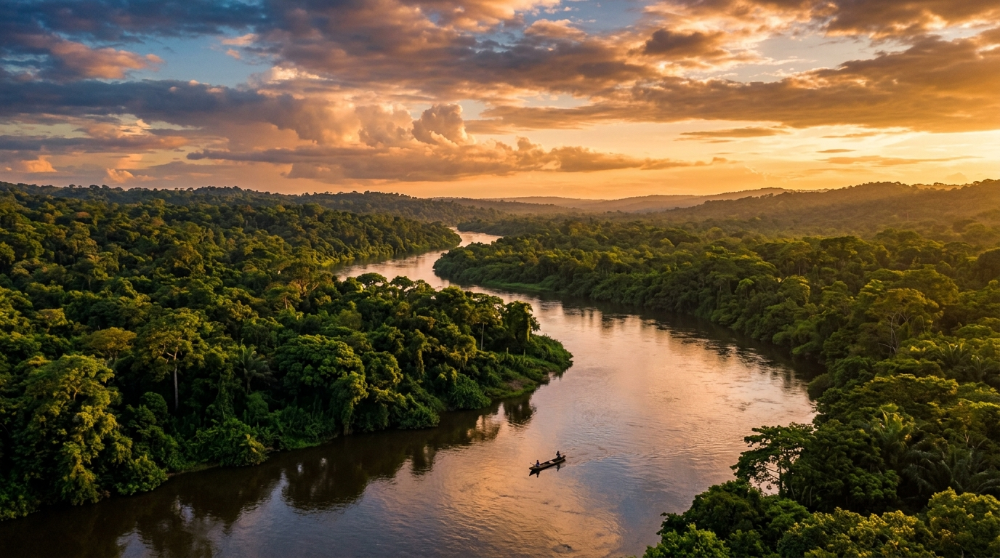

Kinshasa
95k
Musée National de la RDC
Une architecture moderne abritant des trésors de l'art et de l'histoire congolaise

RetourUn voyage épique au cœur du deuxième poumon vert de la planète
La République Démocratique du Congo (RDC) est une terre de superlatifs. Ce géant d'Afrique Centrale abrite la deuxième plus grande forêt tropicale au monde, parcourue par le majestueux fleuve Congo. C'est l'un des rares endroits sur Terre où l'on peut observer les gorilles de montagne dans le parc des Virunga ou les gorilles de plaine au Kahuzi-Biega. De l'énergie bouillonnante de Kinshasa, métropole culturelle et musicale, aux sommets enneigés des Rwenzori, la RDC offre une aventure sans pareille. Entre le volcan Nyiragongo et son lac de lave unique et les chutes spectaculaires de Zongo, chaque kilomètre parcouru est une ode à la puissance de la nature et à la résilience d'un peuple fier et créatif.
Explorez les 15 merveilles du Géant de l'Afrique
Une architecture moderne abritant des trésors de l'art et de l'histoire congolaise

Le plus ancien parc d'Afrique, sanctuaire des derniers gorilles de montagne

Un spectacle dantesque avec le plus grand lac de lave permanent au monde

Une chute impressionnante de 65m au milieu d'une jungle luxuriante

Un lac majestueux entouré de montagnes, perle de l'Est du Congo

Le domaine privilégié des gorilles de plaine de l'Est, au milieu de forêts primaires

Le seul sanctuaire au monde pour les bonobos orphelins, nos plus proches cousins

Pêche traditionnelle spectaculaire avec des nasses au-dessus des rapides du fleuve

Un oasis de paix centenaire abritant une collection exceptionnelle de plantes tropicales

Une épopée fluviale au cœur de la forêt équatoriale sur le deuxième fleuve le plus puissant du monde

La capitale du cuivre, ville dynamique mêlant architecture coloniale et modernité industrielle

La plus grande réserve de forêt tropicale humide d'Afrique, accessible uniquement par voie d'eau
L'unique façade maritime du pays, entre plages sauvages et parc marin des mangroves
Un édifice majestueux au coeur de la capitale, symbole de la ferveur religieuse
Une savane infinie abritant des éléphants, des girafes et autrefois le rhinocéros blanc
La "Rumba" au coeur d'une nation créative et résiliente.
La culture de la RD Congo est une force vitale qui s'exprime à travers tout le continent. Kinshasa, capitale de la sape et de la musique, est le berceau de la Rumba Congolaise, inscrite au patrimoine culturel immatériel de l'UNESCO. De l'art traditionnel des royaumes Luba et Kuba à la peinture contemporaine foisonnante, la créativité congolaise est sans limite. Malgré les défis, le peuple congolais cultive un art de vivre fondé sur la solidarité, la joie de vivre et une identité culturelle forte partagée par plus de 250 ethnies. La langue lingala, portée par la musique, unit cette immense nation au-delà des frontières provinciales.
L'âme musicale du pays, un héritage universel qui fait vibrer le monde entier (UNESCO).
La Société des Ambianceurs et des Personnes Élégantes, un art de s'habiller érigé en philosophie de vie.
Des masques et sculptures d'une finesse exceptionnelle, influences majeures de l'art moderne mondial.
Une école de peinture vibrante qui raconte le quotidien, l'histoire et les rêves du peuple congolais.

L'excellence de la création congolaise. De la malachite ciselée aux tissus ancestraux.
 Prestige
Prestige
Pièce décorative sculptée à la main dans la malachite pure du Katanga, d'un vert intense.
 UNESCO
UNESCO
Tissage ancestral aux motifs géométriques complexes, réalisé à partir de fibres de palmier raphia.
 Art
Art
Réplique authentique d'un masque de cérémonie Luba, sculpté dans du bois de vène précieux.
Café d'exception cultivé sur les rives du lac Kivu, aux notes de chocolat et de fruits rouges.
Piano à pouces artisanal en bois et métal, accordé pour jouer les mélodies ancestrales du Congo.
Paniers et corbeilles tissés avec des fibres naturelles colorées, spécialité des régions forestières.

Kinshasa, Luxe & Vue

Kinshasa, Prestige & Style

Kinshasa, Tradition & Confort

Virunga, Éco-Luxe & Gorilles

Goma, Bord de Lac

Lubumbashi, Standing & Service
La cuisine congolaise est riche, généreuse et savoureuse, utilisant des produits frais de la terre et de l'eau.
Le plat national : poulet cuit dans une sauce onctueuse de noix de palme, ail et oignons.
Feuilles de manioc pilées et mijotées avec des légumes, de l'huile de palme et du poisson fumé.
Pâte consistante à base de farine de manioc ou de maïs, accompagnement de base.
Pain de manioc fermenté et cuit à la vapeur dans des feuilles de bananier.
Poisson (souvent capitaine) cuit à l'étouffée dans des feuilles avec épices et tomates.
Poisson salé séché, grillé ou cuisiné avec des bananes plantains et des légumes.
Une spécialité riche en protéines, sautées aux épices, très appréciées en Équateur.
Plat de feuilles d'oseille sauvage au goût acidulé, accompagnant souvent le poisson grillé.
Frites (Makemba) ou bouillies, elles sont l'accompagnement sucré-salé idéal.
Viande de porc ou de bœuf cuite à l'étouffée dans des feuilles avec une sauce épicée.
Fruits tropicaux gorgés de soleil, à déguster frais à tout moment de la journée.
Haricots blancs mijotés dans une sauce tomate savoureuse, souvent servis avec du riz.
Vivez l'énergie créative et festive de la RD Congo.
Grand festival pour la paix réunissant des artistes de toute l'Afrique au bord du lac Kivu (Février).
Événement majeur d'art contemporain mettant en lumière la création artistique congolaise et internationale.
Célébrations nationales (30 Juin) avec parades, concerts et ambiance festive dans tout le pays.
La meilleure période pour visiter l'ensemble du pays. Les routes sont plus praticables, idéal pour le trekking dans les Virunga ou les safaris dans les parcs nationaux.
Fortes pluies tropicales, surtout en Équateur. La nature est d'un vert éclatant, mais certains accès aux parcs reculés peuvent être difficiles. C'est la période des fruits tropicaux.
Vigilance requise dans certaines zones de l'Est. Kinshasa et Lubumbashi sont sûres, mais restez attentifs. Voyagez de préférence avec des agences certifiées.
Vaccin fièvre jaune obligatoire. Prévention du paludisme essentielle. Buvez exclusivement de l'eau en bouteille. Bons hôpitaux privés à Kinshasa.
Visa obligatoire. Procédure en ligne (E-visa) ou auprès des ambassades. Passeport valide au moins 6 mois.
Franc Congolais (CDF) et Dollar Américain (USD) acceptés partout. Cartes bancaires utilisables dans les grands hôtels et banques des villes.
Expert Gorilles & Virunga
Pisteur chevronné dans le Nord-Kivu, Junior vous fera vivre une rencontre émouvante avec les gorilles de montagne.
Experte Culture & Kinshasa
Passionnée par l'art contemporain et la vie nocturne kinois, Sonia vous fera découvrir les secrets de la capitale.
Guide Expéditions Fleuve
Spécialiste de la navigation fluviale, Alain vous accompagnera pour une croisière mythique sur le majestueux fleuve Congo.